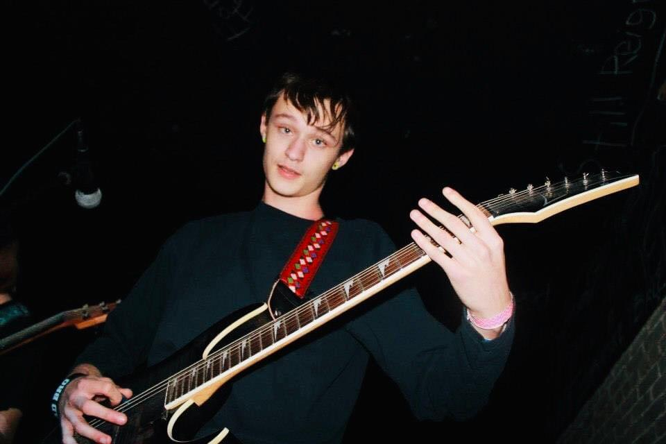

Dylan Bradley is the vocalist for Any Given
Room. His fiery yet catchy vocal melodies come from his background
in Metal, Pop, and Gospel. Dylan is always striving to push himself
and his performances with each new endeavor.
Tyler Merriott
Tyler plays Guitar for Any Given Room. His
roots are in Hard Rock and Metalcore music, but has since introduced
a wider spectrum of genres into his playing, which gives Any Given
Room it's Math Rock/Pop sound you hear today.
Steven Sivils
Stephen is the keyboard player of Any Given
Room. His Various, Dynamic synthesizer and electric piano sounds act
as the "sugar and spice" for the music. He is strongly influenced by
EDM, Pop, and even a few Metal bands.
Christian Whitehead
Christian is the drummer of Any Given Room.
His Hard Rock/Pop infused drumming acts as the rhythmic backbone for
the music. He draws inspiration from Metal and Pop music.
Dustin Renfro
Dustin is the bassist of Any Given Room.
His playing fused with Christians drumming sets a solid foundation for
the rest of the band. His musical backgrounds are in Blues, Rock, Funk
Rock, Psychedelia, with strong emphasis on groove.

Jeremy Gifford
Jeremy plays guitar for Any Given Room. His
lead and rhythm guitar work pushes and pulls with Tyler's to create the "Math
Rock" element that lingers in Any Given Room's music. His
inspiration consists of Alternative, Progressive Rock and
Metalcore.